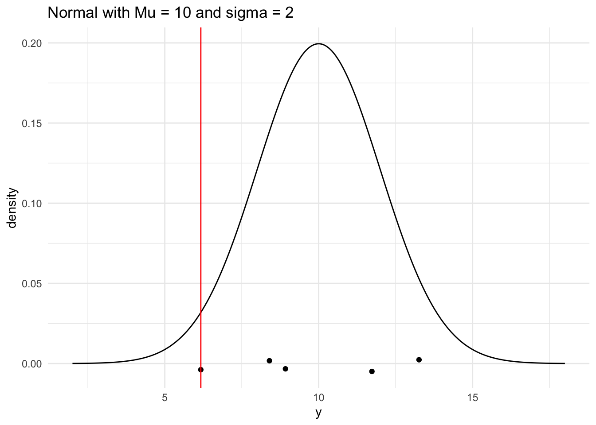
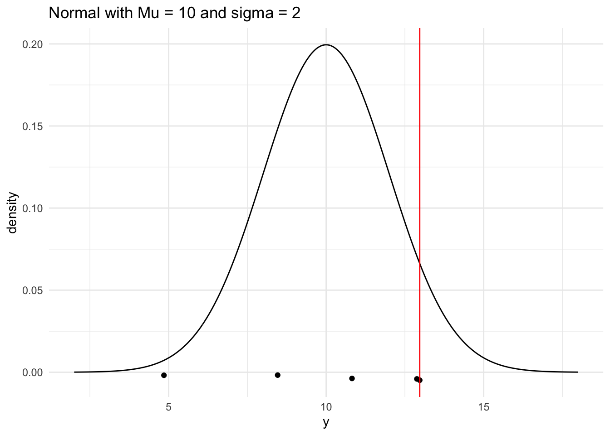
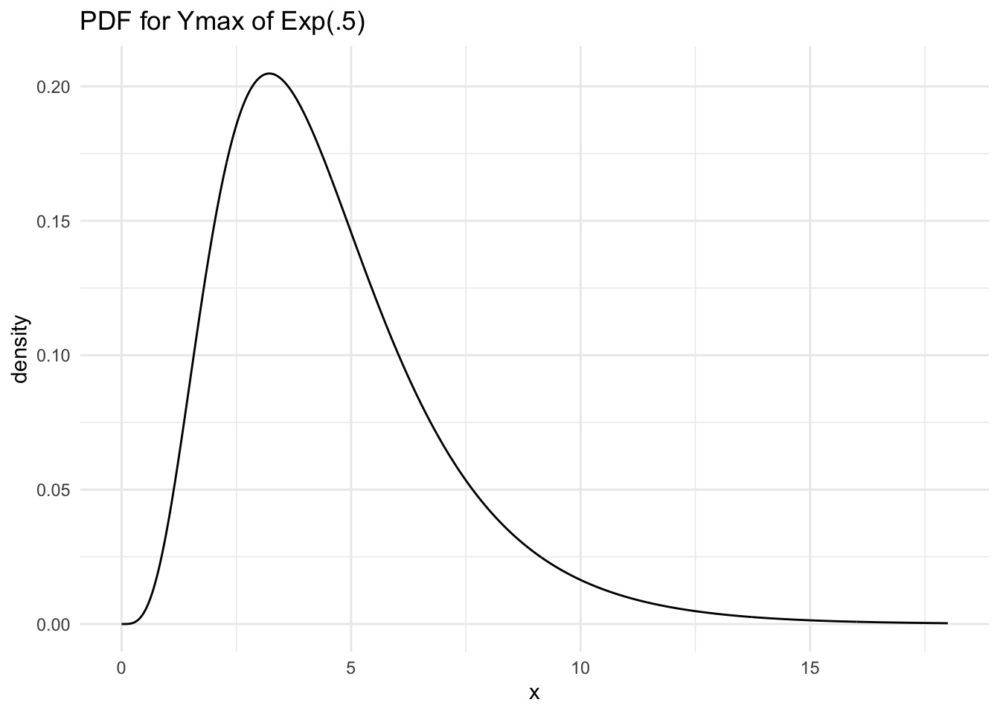

── Attaching core tidyverse packages ──────────────────────── tidyverse 2.0.0 ──
✔ dplyr 1.1.2 ✔ readr 2.1.4
✔ forcats 1.0.0 ✔ stringr 1.5.0
✔ ggplot2 3.4.2 ✔ tibble 3.2.1
✔ lubridate 1.9.2 ✔ tidyr 1.3.0
✔ purrr 1.0.1
── Conflicts ────────────────────────────────────────── tidyverse_conflicts() ──
✖ dplyr::filter() masks stats::filter()
✖ dplyr::lag() masks stats::lag()
ℹ Use the conflicted package (<http://conflicted.r-lib.org/>) to force all conflicts to become errors
Normal Min
n <-5# sample sizemu <-10# population meansigma <-2# population standard deviation# generate a random sample of n observations from a normal populationnorm_single_sample <-rnorm(n, mu, sigma) |>round(2)# look at the samplenorm_single_sample
[1] 13.26 6.17 8.40 11.73 8.92
# compute the sample minnorm_sample_min <-min(norm_single_sample)# look at the sample minnorm_sample_min
[1] 6.17
# generate a range of values that span the populationplot_df <-tibble(xvals =seq(mu -4* sigma, mu +4* sigma, length.out =500)) |>mutate(xvals_density =dnorm(xvals, mu, sigma))## plot the population model density curveggplot(data = plot_df, aes(x = xvals, y = xvals_density)) +geom_line() +theme_minimal() +## add the sample points from your samplegeom_jitter(data =tibble(norm_single_sample), aes(x = norm_single_sample, y =0),width =0, height =0.005) +## add a line for the sample mingeom_vline(xintercept = norm_sample_min, colour ="red") +labs(x ="y", y ="density",title ="Normal with Mu = 10 and sigma = 2")

n <-5# sample sizemu <-10# population meansigma <-2# population standard deviationgenerate_samp_min <-function(mu, sigma, n) { norm_single_sample <-rnorm(n, mu, sigma) norm_sample_min <-min(norm_single_sample)return(norm_sample_min)}## test function once:generate_samp_min(mu = mu, sigma = sigma, n = n)
[1] 8.838446
nsim <-5000# number of simulations## code to map through the function. ## the \(i) syntax says to just repeat the generate_samp_min function## nsim timesnorm_mins <-map_dbl(1:nsim, \(i) generate_samp_min(mu = mu, sigma = sigma, n = n))## print some of the 5000 mins## each number represents the sample min from __one__ sample.norm_mins_df <-tibble(norm_mins)norm_mins_df
ggplot(data = norm_mins_df, aes(x = norm_mins)) +geom_histogram(colour ="deeppink4", fill ="deeppink1", bins =20) +theme_minimal() +labs(x ="Observed Sample mins",title =paste("Sampling Distribution of the \nSample min when n =", n))
n <-5# sample sizemu <-10# population meansigma <-2# population standard deviation# generate a random sample of n observations from a normal populationsingle_sample <-rnorm(n, mu, sigma) |>round(2)# look at the samplesingle_sample
[1] 10.82 8.46 12.88 12.97 4.85
# compute the sample minsample_max <-max(single_sample)# look at the sample minsample_max
[1] 12.97
# generate a range of values that span the populationplot_df <-tibble(xvals =seq(mu -4* sigma, mu +4* sigma, length.out =500)) |>mutate(xvals_density =dnorm(xvals, mu, sigma))## plot the population model density curveggplot(data = plot_df, aes(x = xvals, y = xvals_density)) +geom_line() +theme_minimal() +## add the sample points from your samplegeom_jitter(data =tibble(single_sample), aes(x = single_sample, y =0),width =0, height =0.005) +## add a line for the sample mingeom_vline(xintercept = sample_max, colour ="red") +labs(x ="y", y ="density",title ="Normal with Mu = 10 and sigma = 2")

n <-5# sample sizemu <-10# population meansigma <-2# population standard deviationgenerate_samp_max <-function(mu, sigma, n) { single_sample <-rnorm(n, mu, sigma) sample_max <-max(single_sample)return(sample_max)}## test function once:generate_samp_max(mu = mu, sigma = sigma, n = n)
[1] 12.11905
nsim <-5000# number of simulations## code to map through the function. ## the \(i) syntax says to just repeat the generate_samp_min function## nsim timesmaxs <-map_dbl(1:nsim, \(i) generate_samp_max(mu = mu, sigma = sigma, n = n))## print some of the 5000 mins## each number represents the sample min from __one__ sample.norm_maxs_df <-tibble(maxs)norm_maxs_df
ggplot(data = norm_maxs_df, aes(x = maxs)) +geom_histogram(colour ="deeppink4", fill ="deeppink1", bins =20) +theme_minimal() +labs(x ="Observed Sample maxs",title =paste("Sampling Distribution of the \nSample max when n =", n))
n <-5# sample sizetheta1 <-7theta2 <-13mu <- (theta1+theta2)/2# population meansigma <-sqrt(((theta1+theta2)^2)/12 ) # population standard deviationgenerate_unif_min <-function(theta1,theta2, n) { unif_single_sample <-runif(n, theta1,theta2) unif_sample_min <-min(unif_single_sample)return(unif_sample_min)}## test function once:generate_unif_min(theta1 = theta1, theta2=theta2, n = n)
[1] 7.121323
#> [1] 3.915946nsim <-5000# number of simulationsunif_mins <-map_dbl(1:nsim, \(i) generate_unif_min(theta1 = theta1, theta2=theta2, n = n))## print some of the 5000 means## each number represents the sample mean from __one__ sample.unif_mins_df <-tibble(unif_mins)unif_mins_df
ggplot(data = unif_mins_df, aes(x = unif_mins)) +geom_histogram(colour ="darkolivegreen4", fill ="darkolivegreen1", bins =20) +theme_minimal() +labs(x ="Observed Sample Mins",title =paste("Sampling Distribution of the \nSample min when n =", n))
n <-5# sample sizetheta1 <-7theta2 <-13mu <- (theta1+theta2)/2# population meansigma <-sqrt(((theta1+theta2)^2)/12 ) # population standard deviationgenerate_unif_max <-function(theta1,theta2, n) { unif_single_sample <-runif(n, theta1,theta2) unif_sample_max <-max(unif_single_sample)return(unif_sample_max)}## test function once:generate_unif_max(theta1 = theta1, theta2=theta2, n = n)
[1] 12.16577
#> [1] 3.915946nsim <-5000# number of simulationsunif_maxs <-map_dbl(1:nsim, \(i) generate_unif_max(theta1 = theta1, theta2=theta2, n = n))## print some of the 5000 means## each number represents the sample mean from __one__ sample.unif_maxs_df <-tibble(unif_maxs)unif_maxs_df
ggplot(data = unif_maxs_df, aes(x = unif_maxs)) +geom_histogram(colour ="darkolivegreen4", fill ="darkolivegreen1", bins =20) +theme_minimal() +labs(x ="Observed Sample Maxs",title =paste("Sampling Distribution of the \nSample max when n =", n))
n <-5# sample sizelambda <- .5mu <-1/ lambda # population meansigma <-sqrt(1/ lambda ^2) # population standard deviationgenerate_exp_min <-function(lambda, n) { exp_single_sample <-rexp(n, lambda) exp_sample_min <-min(exp_single_sample)return(exp_sample_min)}## test function once:generate_exp_min(lambda = lambda, n = n)
[1] 0.002978954
#> [1] 3.915946nsim <-5000# number of simulationsexp_mins <-map_dbl(1:nsim, \(i) generate_exp_min(lambda = lambda, n = n))## print some of the 5000 means## each number represents the sample mean from __one__ sample.exp_mins_df <-tibble(exp_mins)exp_mins_df
ggplot(data = exp_mins_df, aes(x = exp_mins)) +geom_histogram(colour ="darkolivegreen4", fill ="darkolivegreen1", bins =20) +theme_minimal() +labs(x ="Observed Sample Mins",title =paste("Sampling Distribution of the \nSample min when n =", n))
n <-5# sample sizelambda <- .5mu <-1/ lambda # population meansigma <-sqrt(1/ lambda ^2) # population standard deviationgenerate_exp_max <-function(lambda, n) { exp_single_sample <-rexp(n, lambda) exp_sample_max <-max(exp_single_sample)return(exp_sample_max)}## test function once:generate_exp_max(lambda = lambda, n = n)
[1] 4.968905
#> [1] 3.915946nsim <-5000# number of simulationsexp_maxs <-map_dbl(1:nsim, \(i) generate_exp_max(lambda = lambda, n = n))## print some of the 5000 means## each number represents the sample mean from __one__ sample.exp_maxs_df <-tibble(exp_maxs)exp_maxs_df
ggplot(data = exp_maxs_df, aes(x = exp_maxs)) +geom_histogram(colour ="darkolivegreen4", fill ="darkolivegreen1", bins =20) +theme_minimal() +labs(x ="Observed Sample Mins",title =paste("Sampling Distribution of the \nSample max when n =", n))
n <-5# sample sizealpha <-8beta <-2mu <- (alpha)/(alpha+beta) # population meansigma <-sqrt((alpha*beta)/(((alpha+beta)^2)*(alpha+beta+1)) ) # population standard deviationgenerate_beta_min <-function(alpha,beta, n) { beta_single_sample <-rbeta(n, alpha,beta) beta_sample_min <-min(beta_single_sample)return(beta_sample_min)}## test function once:generate_beta_min(alpha = alpha, beta=beta, n = n)
[1] 0.6964316
#> [1] 3.915946nsim <-5000# number of simulationsbeta_mins <-map_dbl(1:nsim, \(i) generate_beta_min(alpha = alpha, beta=beta, n = n))## print some of the 5000 means## each number represents the sample mean from __one__ sample.beta_mins_df <-tibble(beta_mins)beta_mins_df
ggplot(data = beta_mins_df, aes(x = beta_mins)) +geom_histogram(colour ="darkolivegreen4", fill ="darkolivegreen1", bins =20) +theme_minimal() +labs(x ="Observed Sample Mins",title =paste("Sampling Distribution of the \nSample min when n =", n))
n <-5# sample sizealpha <-8beta <-2mu <- (alpha)/(alpha+beta) # population meansigma <-sqrt((alpha*beta)/(((alpha+beta)^2)*(alpha+beta+1)) ) # population standard deviationgenerate_beta_max <-function(alpha,beta, n) { single_sample <-rbeta(n, alpha,beta) sample_max <-max(single_sample)return(sample_max)}## test function once:generate_beta_max(alpha = alpha, beta=beta, n = n)
[1] 0.7841302
#> [1] 3.915946nsim <-5000# number of simulationsmaxs <-map_dbl(1:nsim, \(i) generate_beta_max(alpha = alpha, beta=beta, n = n))## print some of the 5000 means## each number represents the sample mean from __one__ sample.beta_maxs_df <-tibble(maxs)beta_maxs_df
ggplot(data = beta_maxs_df, aes(x = maxs)) +geom_histogram(colour ="darkolivegreen4", fill ="darkolivegreen1", bins =20) +theme_minimal() +labs(x ="Observed Sample Maxs",title =paste("Sampling Distribution of the \nSample max when n =", n))
I wasn’t able to plot the histograms together like this, so I made histograms throughout the document for Ymax and Ymin of each distribution.
Table of Results
\(\text{N}(\mu = 10, \sigma^2 = 4)\)
\(\text{Unif}(\theta_1 = 7, \theta_2 = 13)\)
\(\text{Exp}(\lambda = 0.5)\)
\(\text{Beta}(\alpha = 8, \beta = 2)\)
\(\text{E}(Y_{min})\)
7.65
7.98
.4
.65
\(\text{E}(Y_{max})\)
12.34
12.01
4.55
.93
\(\text{SE}(Y_{min})\)
1.35
.83
.4
.11
\(\text{SE}(Y_{max})\)
1.35
.83
2.37
.045
n <-5## CHANGE 0 and 3 to represent where you want your graph to start and end## on the x-axisx <-seq(0, 18, length.out =1000)## CHANGE to be the pdf you calculated. Note that, as of now, ## this is not a proper density (it does not integrate to 1).density <-5* (1-exp(-(.5)*x)) ^(4) * (.5*exp(-(.5)*x))## put into tibble and plotsamp_max_df <-tibble(x, density)ggplot(data = samp_max_df, aes(x = x, y = density)) +geom_line() +theme_minimal()+labs(title="PDF for Ymax of Exp(.5)")

n <-5## CHANGE 0 and 3 to represent where you want your graph to start and end## on the x-axisx <-seq(0, 5, length.out =1000)## CHANGE to be the pdf you calculated. Note that, as of now, ## this is not a proper density (it does not integrate to 1).density <-2.5*exp(-(2.5)*x)## put into tibble and plotsamp_min_df <-tibble(x, density)ggplot(data = samp_min_df, aes(x = x, y = density)) +geom_line() +theme_minimal() +labs(title="PDF for Ymin of Exp(.5)")